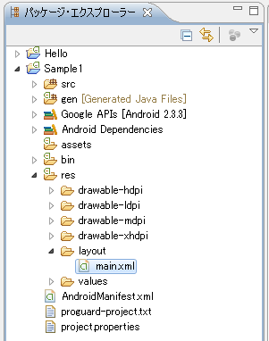
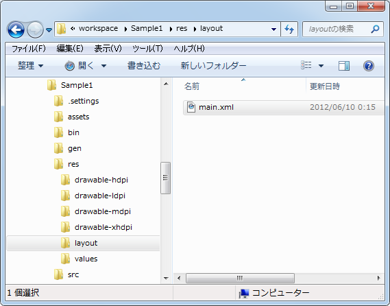
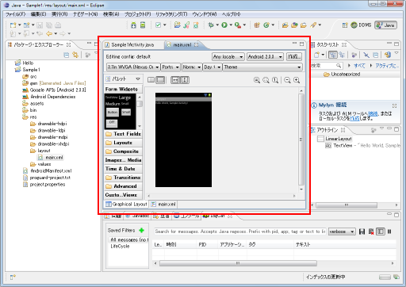
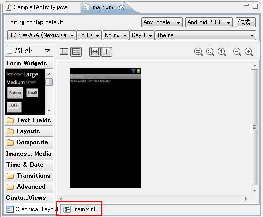
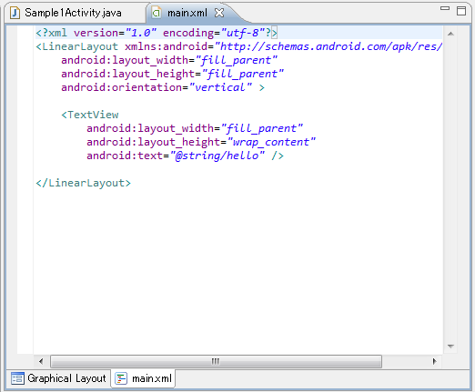
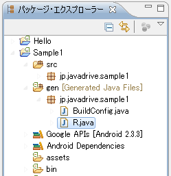
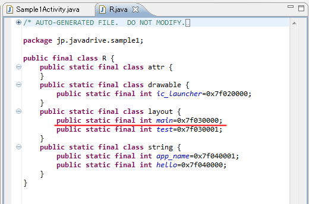
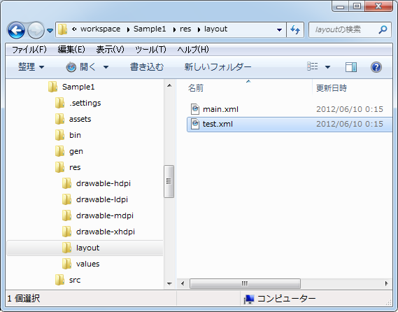
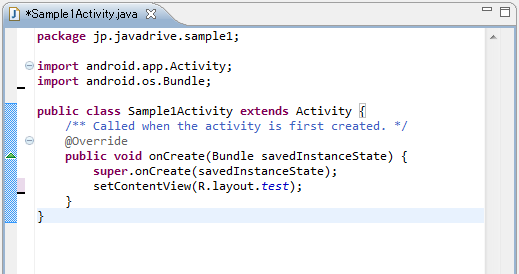
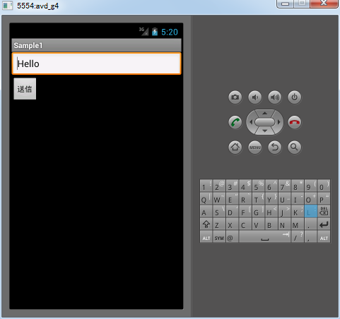

XMLファイルを使ってビューを定義
setContentViewメソッドを使ってビューをアクティビティに配置する方法の1つとしてXMLファイルを使う方法について解説します。Eclipseでプロジェクトを作成した場合はこの方法が使われます。
1.XMLファイルの場所
2.EclipseでのXMLファイルエディタ
3.main.xmlの中身
4.xmlns:android="http://schemas.android.com/apk/res/android"とは
5.その他の属性に関する説明
6.R.layout.mainとは
7.テスト
XMLファイルの場所
ビューが定義されたXMLファイルは「main.xml」という名前で作成されています。Eclipse上で確認する場合は「res/layout/main.xml」にあります。

実際のファイルも「res/layout/main.xml」として作成されています。

EclipseでのXMLファイルエディタ
ではファイルを開いてみます。ローカルに保存されている「main.xml」ファイルをテキストエディタで開いてもいいですし、Eclipse上で表示することもできます。Eclipse上で見る場合は、パッケージ・エクスプローラー上で「main.xml」ファイルをダブルクリックして下さい。Eclipseの画面中央にXMLファイルのエディタが表示されます。

XMLファイルをエディタビューで表示した場合は、ソースの表示の他にグラフィカルにプレビュー画面を見ながら編集する機能が付いています。下記のように表示されていたらグラフィカルな編集画面の為、画面下部にあるタブの中で「main.xml」タブをクリックして下さい。

次のようにXMLファイルの中身が表示されます。

このようにEclipse上でもXMLファイルの中身を編集することが可能です。ただ私の環境では編集が少し行いにくいので、ファイルを直接テキストエディタで開いて編集します。(どちらでも構いません)。
main.xmlの中身
ローカルに保存されている「main.xml」ファイルをテキストエディタで開くと次のように表示されています。
<?xml version="1.0" encoding="utf-8"?>
<LinearLayout xmlns:android="http://schemas.android.com/apk/res/android"
android:layout_width="fill_parent"
android:layout_height="fill_parent"
android:orientation="vertical" >
<TextView
android:layout_width="fill_parent"
android:layout_height="wrap_content"
android:text="@string/hello" />
</LinearLayout>
1行目はXML形式のファイルで記述するXML宣言ですので2行目以降にアクティビティに追加するビューに関する記述を行います。上記では各要素に対する属性が複数記述されているので一見すると難しそうに見えるのですが、属性の部分を省略してみると次のような簡単な構造のXMLファイルであることが分かります。
<?xml version="1.0" encoding="utf-8"?>
<LinearLayout>
<TextView />
</LinearLayout>
では記述方法についてご説明します。
1つのビューを記述するには次のように記述します。
<?xml version="1.0" encoding="utf-8"?> <View />
ViewにはTextViewやButtonなどViewクラスのサブクラスを記述します。
アクティビティに配置できるビューは1つだけなのですが、「ビューグループ」で解説したようにビューグループを使うことで複数のビューをアクティビティに配置することができます。この場合は次のように記述します。
<?xml version="1.0" encoding="utf-8"?>
<ViewGroup>
<View />
<View />
</ViewGroup>
ViewGroupにはLinearLayoutなどを指定します。自動的に作成されたmain.xmlファイルはこの形です。またビューグループの中には他のビューグループを追加することもできますので、より複雑なレイアウトの場合は次のような記述となります。
<?xml version="1.0" encoding="utf-8"?>
<ViewGroup>
<View />
<View />
<ViewGroup>
<View />
</ViewGroup>
</ViewGroup>
このようにアクティビティに配置したいビューやどのようにレイアウトするのかについて、XMLファイルに記述しておくことができます。
xmlns:android="http://schemas.android.com/apk/res/android"とは
先程の説明では分かりやすくするために属性に関する記述を全て省略して書いていました。実際にはビューの幅や高さ、そしてビューに表示する文字列などに関する情報を各ビューの要素毎に属性として設定します。ここではどのような値を設定しているのかについて簡単にご説明しておきます。
まずXMLファイルの中でXML宣言の次に記述されるのがルート要素と呼ばれるものです。これは一番外側の要素で他の要素は全てルート要素の中に記述されます。複数のビューを使用する場合、必ずビューグループの中に配置する必要があるので、ルート要素はいずれかのビューグループとなります。
<?xml version="1.0" encoding="utf-8"?>
<ルート要素>
<View />
<View />
<ViewGroup>
<View />
</ViewGroup>
</ルート要素>
ルート要素にはお約束として「xmlns:android」属性に対して「http://schemas.android.com/apk/res/android」を必ず設定する必要があります。これは名前空間に関する定義です。
これが何なのかについて簡単に説明します。例えばXMLファイルの中で「height」というタグが使われたとします。このタグは例えばXHTMLの中で定義されている「height」のことなのか、それともAndroidのレイアウト用として定義されている「height」なのか区別が付きません。そこでどこで定義されたタグなのかを識別するための識別子をタグの前に付けます。この識別子が「http://schemas.android.com/apk/res/android」です。(これはURLではないので、このURLをブラウザで見ても何もありません。識別子は世界中で重複しない名前を付ける必要があるため、URLを使った値が使用されています)。
例えばこのXMLファイルの中で属性として使用される「text」というタグは、Android用に定義されたタグということを表すために識別子を使って次にように記述します。
{http://schemas.android.com/apk/res/android}text=...
ただ一々このように書くのは大変です。そこで名前空間として次のように記述を行います。
xmlns:android="http://schemas.android.com/apk/res/android"
すると識別子の「http://schemas.android.com/apk/res/android」と書いていた代わりに今回の場合は「android」という値を使って次のように記述することができます。
android:text=...
かなり簡略化されました。名前空間に関する定義をルート要素で行うことで、ルート要素内の各要素で使われているタグで「android」を使用したタグを使うことができるようになります。
実際に自動で作成されたソースを見てみても、ルート要素であるLinerLayoutで記述がされています。そしてルート要素を含め、各要素の属性の中で使用されているタグ名に「android:」が付いています。
<?xml version="1.0" encoding="utf-8"?> <LinearLayout xmlns:android="http://schemas.android.com/apk/res/android" android:layout_width="fill_parent" android:layout_height="fill_parent" android:orientation="vertical" > <TextView android:layout_width="fill_parent" android:layout_height="wrap_content" android:text="@string/hello" /> </LinearLayout>
このように名前空間に関する定義はルート要素で一度だけ必ず行うようにして下さい。
その他の属性に関する説明
ではそれ以外の属性についても簡単に確認しておきます。LinearLayoutやTextViewに対してそれぞれ「android:layout_width」と「android:layout_height」属性の値が設定されています。これは幅と高さに関する設定です。詳しくは別のページで行いますが、「fill_parent」という値を設定すると設定可能な最大サイズになります。また「wrap_content」という値を設定すると表示するのに必要なサイズになります。
<?xml version="1.0" encoding="utf-8"?>
<LinearLayout xmlns:android="http://schemas.android.com/apk/res/android"
android:layout_width="fill_parent"
android:layout_height="fill_parent"
android:orientation="vertical" >
<TextView
android:layout_width="fill_parent"
android:layout_height="wrap_content"
android:text="@string/hello" />
</LinearLayout>
LinearLayoutで設定されている「android:orientation」属性は、追加されたビューを縦方向に並べていくのか横方向に並べていくのかを設定しています。TextViewで設定されている「android:text」はテキストビューに表示される文字列を指定しています。(今回はリソースを使って表示される文字列が指定されています)。
<?xml version="1.0" encoding="utf-8"?>
<LinearLayout xmlns:android="http://schemas.android.com/apk/res/android"
android:layout_width="fill_parent"
android:layout_height="fill_parent"
android:orientation="vertical" >
<TextView
android:layout_width="fill_parent"
android:layout_height="wrap_content"
android:text="@string/hello" />
</LinearLayout>
設定可能な属性はビューによって異なります。どんな属性が指定可能なのかは、その都度ご説明していきたいと思います。
R.layout.mainとは
ビューを定義したXMLファイルを作成したら、Activityクラスで用意されているsetContentViewメソッドを使ってアクティビティにビューを配置します。
setContentView public void setContentView (int layoutResID)
Set the activity content from a layout resource. The resource will be inflated, adding all top-level views to the activity. Parameters: layoutResID Resource ID to be inflated.
引数にはアクティビティに設定するビューが定義されたXMLファイルを表すIDを指定します。では作成したXMLファイルに対するint型のID値はどこでいつ設定されているのでしょうか。
今回作成したXMLファイルなどはリソースと呼ばれるものです(リソースには他にも文字列や画像などが含まれるのですが詳しくは別のページで解説します)。リソースが新しく作成され、あらかじめ決められた場所に設置された後にプロジェクトがビルドされるとリソースに対するIDが自動的に「R」クラスの中に記述されます。
Eclipseのパッケージ・エクスプローラー上でプロジェクトの「gen」の中を見て下さい。「R.java」というファイルが作成されています。

「R.java」をダブルクリックして頂くと、Eclipseのソースエディタ上でファイルの中身が表示されます。

「R」クラスが定義され、その中にリソースの種類に応じてインタークラスがいくつか定義されています。ビューに関するリソースは「layout」クラスの中に定義されます。そしてビューが定義されたXMLファイルに対して「public static final」型の変数が自動的に定義されています。(このファイルの中身は自動的に書き換えられるものなので、編集などを行ってはいけません)。
「main.xml」ファイルに対しては「R.layout.main」という変数が自動的に定義されており、setContentViewメソッドの引数に「R.layout.main」を指定することで「main.xml」ファイルで定義されたビューがアクティビティに配置される仕組みとなっています。
自動的に定義される変数名はXMLファイルのファイル名に対応していうようなので、ビューを定義するXMLファイルのファイル名を「xxx.xml」のように作成したら、setContentViewメソッドの引数には「R.layout.xxx」と指定すると覚えておけば宜しいかと思います。
テスト
では実際にXMLファイルを使ってビューを定義してみます。もともと作成されている「main.xml」ファイルはそのままで「test.xml」ファイルを新規に作成します。作成する場所は「main.xml」ファイルが設置されているのと同じ「res/layout/」ディレクトリです。

ファイルの中身は次のようにしました。(文字コードはUTF-8で保存して下さい)。
<?xml version="1.0" encoding="utf-8"?>
<LinearLayout xmlns:android="http://schemas.android.com/apk/res/android"
android:layout_width="fill_parent"
android:layout_height="fill_parent"
android:orientation="vertical" >
<EditText
android:layout_width="fill_parent"
android:layout_height="wrap_content"
android:text="Hello" />
<Button
android:layout_width="wrap_content"
android:layout_height="wrap_content"
android:text="送信" />
</LinearLayout>
次にソースコードを次にように修正します。(Eclipse上で行った方が簡単です)。
package jp.javadrive.sample1;
import android.app.Activity;
import android.os.Bundle;
public class Sample1Activity extends Activity {
/** Called when the activity is first created. */
@Override
public void onCreate(Bundle savedInstanceState) {
super.onCreate(savedInstanceState);
setContentView(R.layout.test);
}
}

では実行します。次のように表示されます。

今回はXMLファイルを使ってテキストボックスとボタンをアクティビティ上に配置してみました。XMLファイルにビューに関する設定やレイアウト方法を記述することでプログラムそのものがすっきりしますし、プログラムを修正せずに画面レイアウトに関する修正を行うことができるというメリットがあります。ただ動的にビューを追加する必要がある場合などはプログラムの中で記述した方が分かりやすいかもしれません。
( Written by Tatsuo Ikura )

著者 / TATSUO IKURA
初心者～中級者の方を対象としたプログラミング方法や開発環境の構築の解説を行うサイトの運営を行っています。